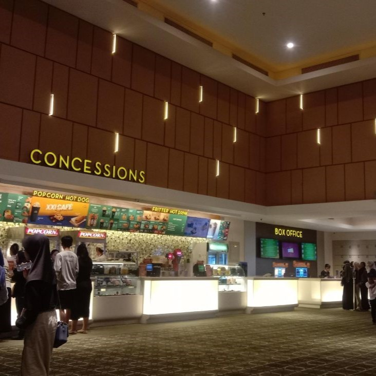

Cileungsi, 24 Mei 2024 -Para penggemar bioskop di Cileungsi kini mendapat kesempatan istimewa dengan hadirnya Cinema XXI, jaringan bioskop terkemuka, yang telah memperkenalkan deretan film terbarunya di Metland Cileungsi tepatnya di Metropolitan mall cileungsi Jl. Metro Raya Metland Transyogi. Cinema ini merupakan Cinema XXI ke-11 yang hadir di kota yang dikenal memiliki curah hujan tinggi tersebut. Di tengah antisipasi yang begitu tinggi, para pecinta film kini dapat merasakan keajaiban layar perak seperti tak pernah sebelumnya di komunitas yang penuh semangat ini. Ceremoni peresmian, yang dihadiri oleh para penggemar film dan tokoh-tokoh penting setempat, menampilkan komitmen Cinema XXI untuk menghadirkan hiburan terbaik ke kota Cileungsi. Dengan fasilitas canggihnya dan pengalaman menonton yang mendalam, bioskop yang baru dibuka ini berjanji untuk mendefinisikan kembali menonton film di daerah tersebut. "Kami sangat senang dapat membawa pengalaman bioskop terbaru dan terbaik ke komunitas yang penuh semangat di Metland Cileungsi," ujar Bapak CEO Cinema XXI. “Tujuan kami bukan hanya untuk menayangkan film, tetapi juga untuk menciptakan momen-momen berkesan bagi keluarga dan teman-teman untuk dikenang." Pembukaan Cinema XXI di Metland Cileungsi menandai tonggak penting dalam lanskap hiburan di wilayah tersebut, memberikan warga dengan pengalaman bioskop kelas dunia tepat di depan pintu mereka. Baik itu untuk berkumpul bersama teman-teman di akhir pekan atau malam film bersama keluarga, Cinema XXI berjanji menjadi destinasi utama bagi pencari hiburan di Cileungsi. Bicara soal harga, Anda tidak perlu khawatir. Metmall Cileungsi XXI hadir dengan harga yang sangat bersahabat. Untuk tiket pertunjukan 2D dan 3D, Anda hanya dikenakan biaya sebesar Rp.40.000,- (Senin s/d Jumat), dan Rp.45.000,- (Sabtu/Minggu/Libur). Yang pasti, Metmall Cileungsi XXI bisa menjadi alternatif lain bagi Anda para pecinta film di kawasan Bogor dan sekitarnya untuk menikmati film-film yang berkualitas.
